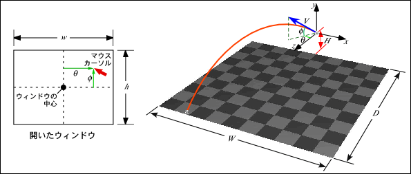
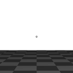

ピッチングマシーンの実験
マウスをクリックすると， 向こうからボールが飛んで来るプログラムを作ってみましょう． これまでに作ったプログラムをベースを改造するのが手っ取り早いと思いますが， うまく行かなければ下の手順を参考にしてください． ソースファイル名は prog5.c としてください．
下のプログラムは遠方に１個の球を静止画で表示します． マウスのボタンをクリックすると， この球が向こうからこちらに飛んで来るようにしてください．
#include <stdlib.h>
#include <GL/glut.h>
#define W 10 /* 地面の幅 */
#define D 10 /* 地面の長さ */
#define QX 0.0 /* 球の初期位置のｘ座標値 */
#define QY 1.5 /* 球の初期位置のｙ座標値 */
#define QZ (-5.0) /* 球の初期位置のｚ座標値 */
#define G (-9.8) /* 重力加速度 */
#define V 25.0 /* 初速度 */
#define TSTEP 0.01 /* フレームごとの時間 */
#define R 0.1 /* ボールの半径 */
/*
* 地面を描く
*/
static void myGround(double height)
{
const static GLfloat ground[][4] = {
{ 0.6, 0.6, 0.6, 1.0 },
{ 0.3, 0.3, 0.3, 1.0 }
};
int i, j;
glBegin(GL_QUADS);
glNormal3d(0.0, 1.0, 0.0);
for (j = -D / 2; j < D / 2; ++j) {
for (i = -W / 2; i < W / 2; ++i) {
glMaterialfv(GL_FRONT, GL_DIFFUSE, ground[(i + j) & 1]);
glVertex3d((GLdouble)i, height, (GLdouble)j);
glVertex3d((GLdouble)i, height, (GLdouble)(j + 1));
glVertex3d((GLdouble)(i + 1), height, (GLdouble)(j + 1));
glVertex3d((GLdouble)(i + 1), height, (GLdouble)j);
}
}
glEnd();
}
/*
* 画面表示
*/
static void display(void)
{
const static GLfloat white[] = { 0.8, 0.8, 0.8, 1.0 }; /* 球の色 */
const static GLfloat lightpos[] = { 3.0, 4.0, 5.0, 1.0 }; /* 光源の位置 */
static double px = QX, py = QY, pz = QZ; /* 球の位置 */
/* 画面クリア */
glClear(GL_COLOR_BUFFER_BIT | GL_DEPTH_BUFFER_BIT);
/* モデルビュー変換行列の初期化 */
glLoadIdentity();
/* 光源の位置を設定 */
glLightfv(GL_LIGHT0, GL_POSITION, lightpos);
/* 視点の移動（物体の方を奥に移す）*/
glTranslated(0.0, -QY, -D);
/* シーンの描画 */
myGround(0.0);
glTranslated(px, py, pz);
glMaterialfv(GL_FRONT, GL_DIFFUSE, white);
glutSolidSphere(R, 16, 8);
glFlush();
}
static void resize(int w, int h)
{
/* ウィンドウ全体をビューポートにする */
glViewport(0, 0, w, h);
/* 透視変換行列の指定 */
glMatrixMode(GL_PROJECTION);
/* 透視変換行列の初期化 */
glLoadIdentity();
gluPerspective(30.0, (double)w / (double)h, 1.0, 100.0);
/* モデルビュー変換行列の指定 */
glMatrixMode(GL_MODELVIEW);
}
static void keyboard(unsigned char key, int x, int y)
{
/* ESC か q をタイプしたら終了 */
if (key == '\033' || key == 'q') {
exit(0);
}
}
static void init(void)
{
/* 初期設定 */
glClearColor(1.0, 1.0, 1.0, 1.0);
glEnable(GL_DEPTH_TEST);
glEnable(GL_CULL_FACE);
glEnable(GL_LIGHTING);
glEnable(GL_LIGHT0);
}
int main(int argc, char *argv[])
{
glutInit(&argc, argv);
glutInitDisplayMode(GLUT_RGBA | GLUT_DEPTH);
glutCreateWindow(argv[0]);
glutDisplayFunc(display);
glutReshapeFunc(resize);
glutKeyboardFunc(keyboard);
init();
glutMainLoop();
return 0;
}
球が飛んで来る方向は， マウスのボタンをクリックした位置で決定してください． 例えば，ウィンドウの中央でクリックした場合は真正面に， 中央より上でクリックした場合には上方向に， 中央より右でクリックした場合は右方向（ピッチャーから見て左方向） に飛んで来るようにしてみましょう． もちろん，地面にぶつかったらバウンドするようにしてみてください．


このプログラムでは，ボールの現在位置を display() の中の px, py, pz の三つの変数で指定し，初期位置としてそれぞれ QX, QY, QZ が設定されています．したがって px, py, pz を変更すれば，球の位置を変えることができます．
上図において地面の大きさは $W = 10$, $D = 10$ で， 原点はこの地面の中央にあります． 投球位置は原点から Z 方向に -5，高さ $H = 1.5$ の位置にあります． 球はそこから初速度 $|\mathbf{V}| = 25$ で $(\theta, \phi)$ 方向に放出されます． このとき重力加速度 $G = -9.8$ とし， 風や空気抵抗・ボールの回転などの影響は無いものとします．
球の初速度の速度ベクトル $\mathbf{V}$ は次式で求めることができます．
したがって，ボールの位置ベクトル $\mathbf{P} = (P_x, P_y, P_z)$ は，ボールの初期位置を $\mathbf{Q} = (Q_x, Q_y, Q_z)$ とするとき，次式で求めることができます．
ここで $t$ は経過時間で， アニメーションの場合は画面の書き換えを行う時間間隔 （リフレッシュレートの逆数）で増加します （この時間間隔内で描画が完了する場合）． ここではこの間隔に $t_{\text{step}}$ = 0.01 くらいを設定してみてください．なお， 上式では球を地面でバウンドさせる処理が多少ややこしくなるかも知れません． 分かりにくいときは以下の漸化式を参考にしてください （誤差が累積してしまうけど…）．
$\mathbf{P} = (P_x, P_y, P_z)$ の初期値は $\mathbf{Q} = (Q_x, Q_y, Q_z)$ です．こうすると球の地面への着地を $P_y - R \le 0$ （$R$ は球の半径）となったかどうかで判断できます．このときに $V_y \leftarrow -A V_y$ とすれば，球は再び上昇をはじめます．$A$ はバウンドしたときの速度の減衰率で，$0 < A < 1$ の値を設定してみてください．
これはあくまで「一例」に過ぎません． 各定数値の長さと時間の単位を， それぞれ「メートル」と「秒」とすれば考えやすいのではないかと思います． これらも適当に変更してください． 自分が思う通りの「ピッチングマシーン」を作ってください． ただし，飛び方は手裏剣やブーメランやミサイルではなく， ボールらしい飛び方にしてください．